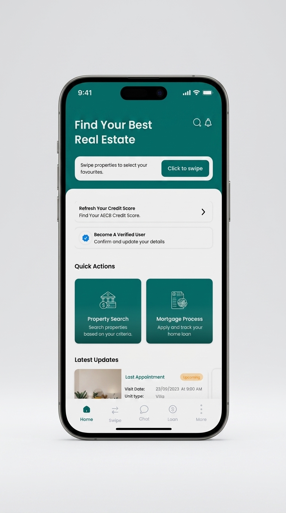
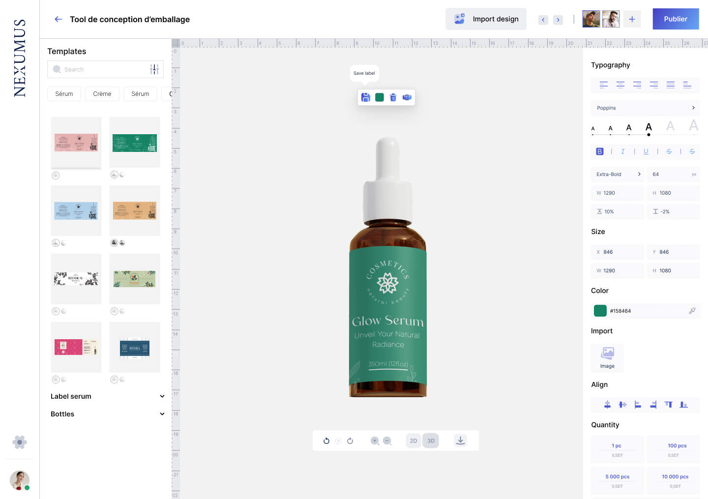

Depuis 2019, je conçois des sites web, applications mobiles et design systems — de la recherche utilisateur au prototype haute-fidélité. Dernier terrain : une application immobilière et un outil SaaS de conception d'emballage.
Une méthode constante d'un projet à l'autre, quel que soit le support — web, mobile ou packaging.
Étude des besoins utilisateurs, benchmark concurrentiel, cadrage des objectifs produit avec les équipes.
Architecture de l'information, wireframes et parcours utilisateurs pour valider la logique avant le visuel.
Design system, composants réutilisables, interfaces à haute fidélité cohérentes sur tous les écrans.
Prototypes interactifs, tests utilisateurs et itérations avant transmission aux équipes de développement.
Techniques et outils mobilisés au quotidien, de la recherche à la livraison design.
Deux études de cas récentes. D'autres projets — branding, e-commerce — arrivent bientôt.

Application immobilière mobile & dashboard back-office : recherche de biens, rendez-vous, comparateur de prêts, e-signature.
Voir l'étude de cas
Outil web de conception d'emballages et d'étiquettes : bibliothèque de mockups, édition typographique et export haute résolution.
Voir l'étude de casUne idée ambitieuse ? Donnons-lui vie ensemble. Partagez votre vision, et transformons-la en une réalisation unique et concrète.
oumaimahofk@gmail.com